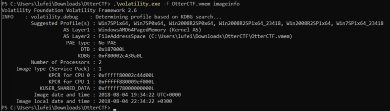
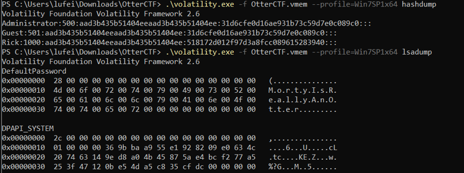
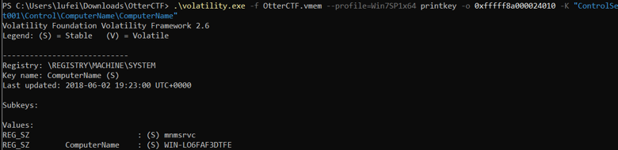
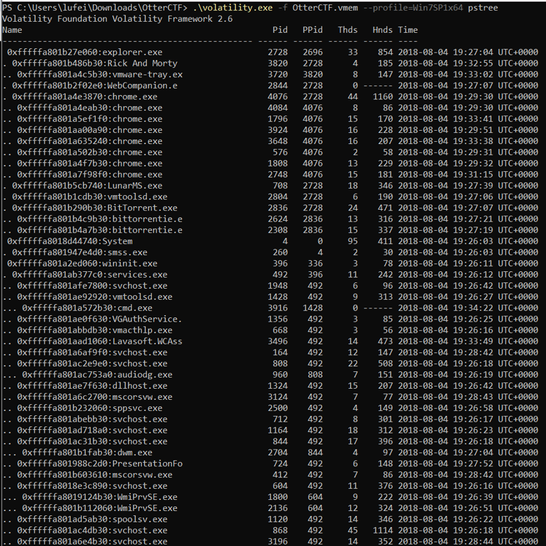
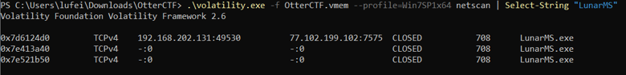
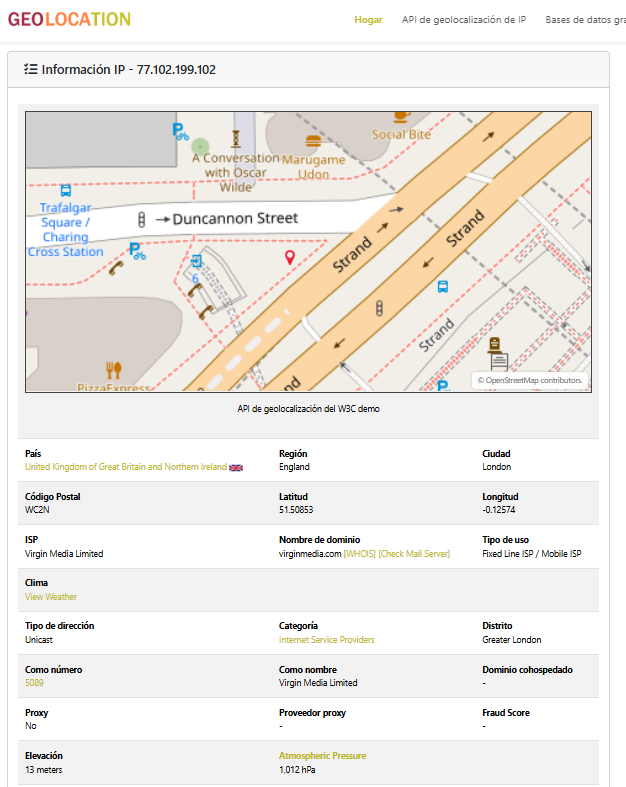
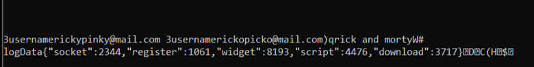
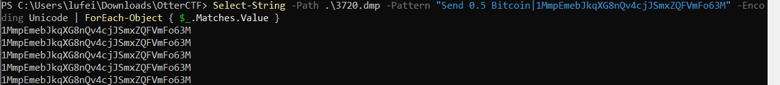
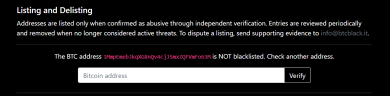

Fase I: Identificación del Sistema, Credenciales y Registro
Se analizó la imagen forense OtterCTF.vmem (2 GB) para determinar la arquitectura del sistema operativo, la marca de tiempo exacta del volcado, las credenciales del perfil activo y el nombre del equipo comprometido dentro de la colmena SYSTEM.
# Identificación del perfil del sistema y marca de tiempo
.\volatility.exe -f OtterCTF.vmem imageinfo
# Extracción de hashes NTLM y secretos LSA en texto plano
.\volatility.exe -f OtterCTF.vmem --profile=Win7SP1x64 hashdump
.\volatility.exe -f OtterCTF.vmem --profile=Win7SP1x64 lsadump
# Listado de colmenas del Registro y extracción del ComputerName
.\volatility.exe -f OtterCTF.vmem --profile=Win7SP1x64 hivelist
.\volatility.exe -f OtterCTF.vmem --profile=Win7SP1x64 printkey -o 0xfffff8a000024010 -K "ControlSet001\Control\ComputerName\ComputerName"- Marca de tiempo local (Image local date and time): 2018-08-04 22:34:22 +0300 (UTC+3)
- Sistema Operativo y Arquitectura: Windows 7 Service Pack 1 x64 (Perfil: Win7SP1x64)
- Usuario y Hash NTLM: Rick (RID 1000) · 518172d012f97d3a8fcc089615283940
- Contraseña recuperada (DefaultPassword LSA): MortyIsReallyAnOtter
- Nombre del Ordenador (ComputerName): WIN-LO6FAF3DTFE (Vincula las iniciales FAF3 de SEDENE y TFE de CNDI)

Fig 1: Identificación del perfil Win7SP1x64 y marca de tiempo

Fig 2: Obtención de contraseña en texto claro (MortyIsReallyAnOtter)

Fig 3: Identificación del equipo WIN-LO6FAF3DTFE mediante printkey
Fase II: Análisis de Procesos, Red y Geolocalización
Mediante el árbol de procesos y el escaneo de sockets en memoria se identificó el direccionamiento IP local, el uso de clientes BitTorrent y la comunicación establecida con los servidores externos de LunarMS.exe.
# Escaneo de conexiones de red e identificación de IP local
.\volatility.exe -f OtterCTF.vmem --profile=Win7SP1x64 netscan
# Árbol de procesos en ejecución
.\volatility.exe -f OtterCTF.vmem --profile=Win7SP1x64 pstree
# Filtrado de conexión hacia el servidor malicioso LunarMS
.\volatility.exe -f OtterCTF.vmem --profile=Win7SP1x64 netscan | Select-String "LunarMS"- Dirección IP local del sistema (EV455FGM): 192.168.202.131
- Proceso A — LunarMS.exe (PID 708): Cliente conectado al servidor externo 77.102.199.102 en el puerto TCP 7575.
- Proceso B — BitTorrent.exe (PID 2836) y Rick And Morty (PID 3820): Cliente P2P utilizado para descargar el ejecutable señuelo desde C:\Torrents\.
- Proceso C — vmware-tray.ex (PID 3720): Proceso hijo de Rick And Morty que suplanta a VMware y ejecuta el ransomware desde una carpeta temporal.
Geolocalización del Servidor Remoto (77.102.199.102:7575)
El rastreo de la dirección IP externa conectada al proceso LunarMS.exe ubica el nodo en Londres, Inglaterra, Reino Unido (Código Postal WC2N, Latitud 51.50853, Longitud -0.12574), asignado al proveedor de servicios Virgin Media Limited (AS5089).

Fig 4: Procesos sospechosos identificados con pstree

Fig 5: Conexión TCP hacia 77.102.199.102:7575

Fig 6: Ubicación geográfica del servidor remoto
Fase III: Ingeniería Social y Análisis del Ransomware (PID 3720)
Se inspeccionó el portapapeles y las cadenas en memoria vinculadas al navegador chrome.exe (PID 4076) para extraer las cuentas de correo electrónico utilizadas. Finalmente, se volcó el proceso 3720 (vmware-tray.exe) para revelar la nota de rescate y la billetera de criptomoneda.
# Extracción de credenciales en el portapapeles y correos en memoria
.\volatility.exe -f OtterCTF.vmem --profile=Win7SP1x64 clipboard
Select-String -Path .\OtterCTF.vmem -Pattern "RickoPicko@mail.com"
# Análisis de ruta de ejecución y volcado de memoria del proceso 3720
.\volatility.exe -f OtterCTF.vmem --profile=Win7SP1x64 cmdline -p 3720,3820
.\volatility.exe -f OtterCTF.vmem --profile=Win7SP1x64 memdump -p 3720 -D .
# Extracción de la cartera de Bitcoin desde el volcado 3720.dmp
Select-String -Path .\3720.dmp -Pattern "Send 0.5 Bitcoin|1MmpEmebJkqXG8nQv4cjJSmxZQFVmFo63M" -Encoding Unicode | ForEach-Object { $_.Matches.Value }- Correos electrónicos identificados: rickopicko@mail.com y rickypinky@mail.com
- Contraseña en portapapeles (EV456FGM): M@il_Pr0vid0rs
- Plataforma y Navegador: Webmail mail.com abierto desde Google Chrome (chrome.exe, PID 4076)
- Ruta falsa del malware (PID 3720): C:\Users\Rick\AppData\Local\Temp\RarSFX0\vmware-tray.exe
- Cartera de Criptomoneda (BTC): 1MmpEmebJkqXG8nQv4cjJSmxZQFVmFo63M (Verificada como NOT blacklisted en BTC Black)

Fig 7: Cuentas de correo en mail.com y contraseña en clipboard

Fig 8: Extracción de la cartera BTC desde 3720.dmp

Fig 9: Consulta de la dirección BTC en listas negras (btcblack.it)
Conclusión Forense
El análisis forense del volcado de memoria RAM (OtterCTF.vmem) mediante Volatility Framework 2.6 permitió reconstruir el incidente y confirmar las hipótesis de inteligencia. Se demostró que la memoria volátil resguarda evidencia crítica que no suele persistir en el disco duro, logrando identificar el sistema operativo (Windows 7 SP1 x64), la dirección IP local (192.168.202.131) y el nombre del equipo (WIN-LO6FAF3DTFE), vinculando directamente las iniciales proporcionadas por SEDENE (FAF3) y CNDI (TFE). Asimismo, se recuperaron las credenciales del usuario Rick (MortyIsReallyAnOtter), las cuentas de correo en mail.com y la cartera de Bitcoin (1MmpEmebJkqXG8nQv4cjJSmxZQFVmFo63M) oculta en el proceso malicioso 3720.